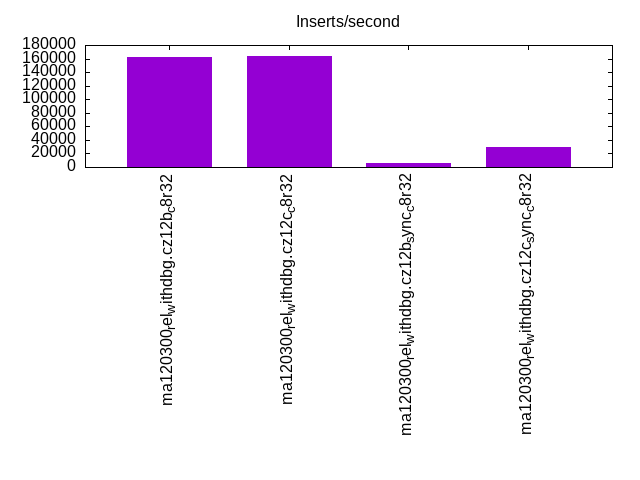
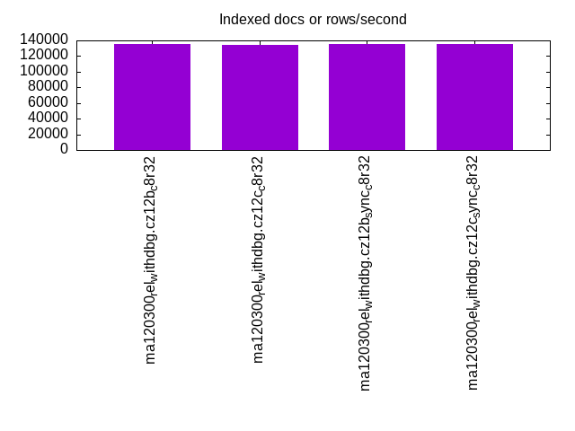
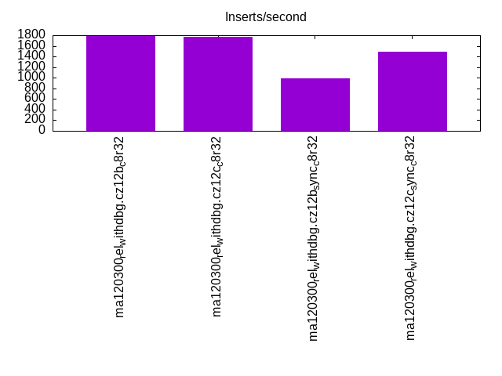
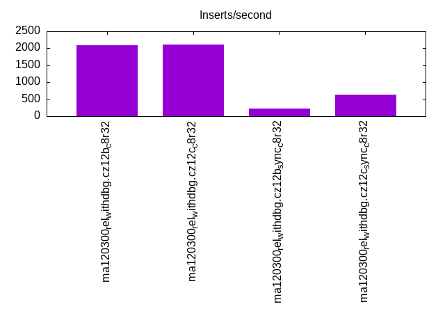
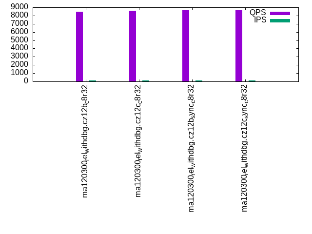
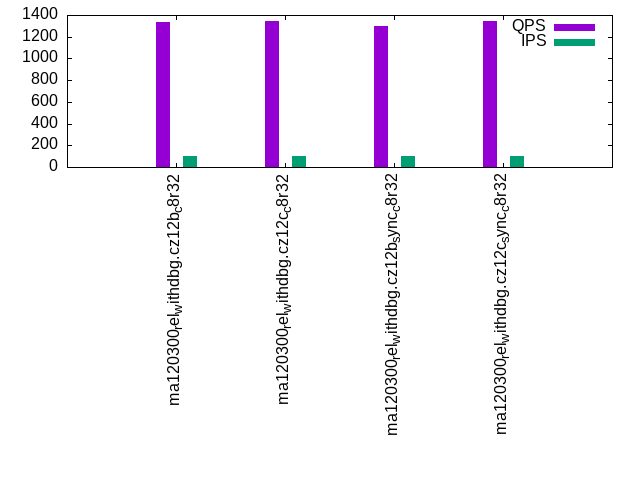
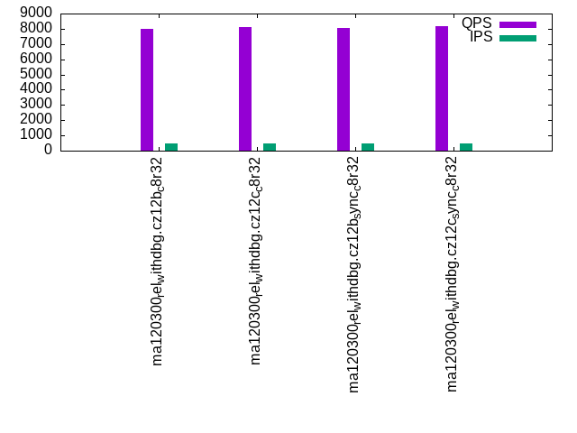
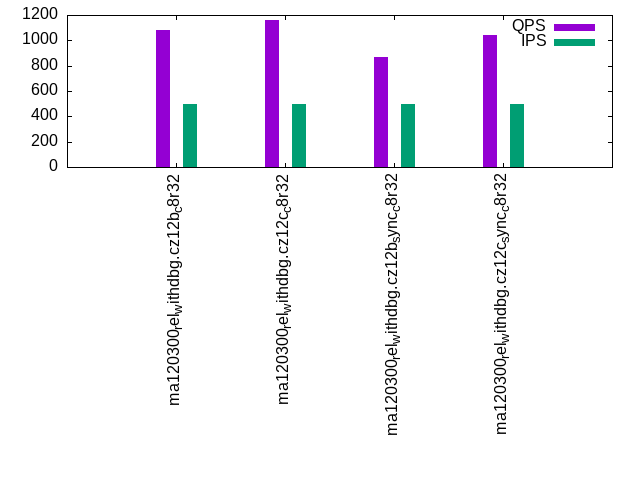
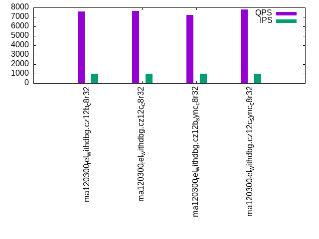
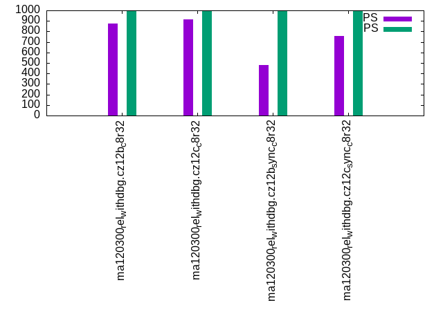

This is a report for the insert benchmark with 800M docs and 1 client(s). It is generated by scripts (bash, awk, sed) and Tufte might not be impressed. An overview of the insert benchmark is here and a short update is here. Below, by DBMS, I mean DBMS+version.config. An example is my8020.c10b40 where my means MySQL, 8020 is version 8.0.20 and c10b40 is the name for the configuration file.
The test server has 8 AMD cores, 32G RAM and an NVMe device for the database. The benchmark was run with 1 client and there were 1 or 3 connections per client (1 for queries or inserts without rate limits, 1+1 for rate limited inserts+deletes). It uses 1 table with a table per client. It loads 800M rows per table without secondary indexes, creates 3 secondary indexes per table, then inserts 4m+1m rows per table with a delete per insert to avoid growing the table. It then does 6 read+write tests for 1800s each that do queries as fast as possible with 100,100,500,500,1000,1000 inserts/s and the same for deletes/s per client concurrent with the queries. The database is larger than memory and the workload is IO-bound for except for the range query tests (qr*). Clients and the DBMS share one server.
The tested DBMS are:
The numbers are inserts/s for l.i0, l.i1 and l.i2, indexed docs (or rows) /s for l.x and queries/s for qr100, qp100 thru qr1000, qp1000" The values are the average rate over the entire test for inserts (IPS) and queries (QPS). The range of values for IPS and QPS is split into 3 parts: bottom 25%, middle 50%, top 25%. Values in the bottom 25% have a red background, values in the top 25% have a green background and values in the middle have no color. A gray background is used for values that can be ignored because the DBMS did not sustain the target insert rate. Red backgrounds are not used when the minimum value is within 80% of the max value.
| dbms | l.i0 | l.x | l.i1 | l.i2 | qr100 | qp100 | qr500 | qp500 | qr1000 | qp1000 |
|---|---|---|---|---|---|---|---|---|---|---|
| ma120300_rel_withdbg.cz12b_c8r32 | 162966 | 135593 | 1793 | 2092 | 8478 | 1338 | 8022 | 1081 | 7601 | 878 |
| ma120300_rel_withdbg.cz12c_c8r32 | 164170 | 134341 | 1775 | 2119 | 8592 | 1349 | 8128 | 1162 | 7648 | 917 |
| ma120300_rel_withdbg.cz12b_sync_c8r32 | 6252 | 135478 | 990 | 216 | 8685 | 1296 | 8055 | 870 | 7199 | 481 |
| ma120300_rel_withdbg.cz12c_sync_c8r32 | 29664 | 135135 | 1489 | 645 | 8649 | 1347 | 8190 | 1043 | 7781 | 754 |
This table has relative throughput, throughput for the DBMS relative to the DBMS in the first line, using the absolute throughput from the previous table. Values less than 0.95 have a yellow background. Values greater than 1.05 have a blue background.
| dbms | l.i0 | l.x | l.i1 | l.i2 | qr100 | qp100 | qr500 | qp500 | qr1000 | qp1000 |
|---|---|---|---|---|---|---|---|---|---|---|
| ma120300_rel_withdbg.cz12b_c8r32 | 1.00 | 1.00 | 1.00 | 1.00 | 1.00 | 1.00 | 1.00 | 1.00 | 1.00 | 1.00 |
| ma120300_rel_withdbg.cz12c_c8r32 | 1.01 | 0.99 | 0.99 | 1.01 | 1.01 | 1.01 | 1.01 | 1.07 | 1.01 | 1.04 |
| ma120300_rel_withdbg.cz12b_sync_c8r32 | 0.04 | 1.00 | 0.55 | 0.10 | 1.02 | 0.97 | 1.00 | 0.80 | 0.95 | 0.55 |
| ma120300_rel_withdbg.cz12c_sync_c8r32 | 0.18 | 1.00 | 0.83 | 0.31 | 1.02 | 1.01 | 1.02 | 0.96 | 1.02 | 0.86 |
This lists the average rate of inserts/s for the tests that do inserts concurrent with queries. For such tests the query rate is listed in the table above. The read+write tests are setup so that the insert rate should match the target rate every second. Cells that are not at least 95% of the target have a red background to indicate a failure to satisfy the target.
| dbms | qr100.L1 | qp100.L2 | qr500.L3 | qp500.L4 | qr1000.L5 | qp1000.L6 |
|---|---|---|---|---|---|---|
| ma120300_rel_withdbg.cz12b_c8r32 | 100 | 100 | 500 | 499 | 999 | 999 |
| ma120300_rel_withdbg.cz12c_c8r32 | 100 | 100 | 500 | 500 | 999 | 999 |
| ma120300_rel_withdbg.cz12b_sync_c8r32 | 100 | 100 | 500 | 499 | 999 | 999 |
| ma120300_rel_withdbg.cz12c_sync_c8r32 | 100 | 100 | 500 | 500 | 999 | 999 |
| target | 100 | 100 | 500 | 500 | 1000 | 1000 |
l.i0: load without secondary indexes. Graphs for performance per 1-second interval are here.
Average throughput:

Insert response time histogram: each cell has the percentage of responses that take <= the time in the header and max is the max response time in seconds. For the max column values in the top 25% of the range have a red background and in the bottom 25% of the range have a green background. The red background is not used when the min value is within 80% of the max value.
| dbms | 256us | 1ms | 4ms | 16ms | 64ms | 256ms | 1s | 4s | 16s | gt | max |
|---|---|---|---|---|---|---|---|---|---|---|---|
| ma120300_rel_withdbg.cz12b_c8r32 | 99.659 | 0.146 | 0.142 | 0.049 | 0.004 | 0.157 | |||||
| ma120300_rel_withdbg.cz12c_c8r32 | 99.680 | 0.132 | 0.062 | 0.125 | 0.001 | 0.229 | |||||
| ma120300_rel_withdbg.cz12b_sync_c8r32 | 59.499 | 40.500 | 0.001 | 0.231 | |||||||
| ma120300_rel_withdbg.cz12c_sync_c8r32 | 76.879 | 23.075 | 0.046 | nonzero | 0.199 |
Performance metrics for the DBMS listed above. Some are normalized by throughput, others are not. Legend for results is here.
ips qps rps rmbps wps wmbps rpq rkbpq wpi wkbpi csps cpups cspq cpupq dbgb1 dbgb2 rss maxop p50 p99 tag 162966 0 0 0.0 978.0 43.8 0.000 0.000 0.006 0.275 22195 20.1 0.136 10 52.6 83.4 23.4 0.157 164075 143582 ma120300_rel_withdbg.cz12b_c8r32 164170 0 0 0.0 1141.5 62.2 0.000 0.000 0.007 0.388 23816 20.2 0.145 10 52.6 83.9 23.4 0.229 164676 150175 ma120300_rel_withdbg.cz12c_c8r32 6252 0 0 0.0 491.6 4.5 0.000 0.000 0.079 0.729 3025 2.0 0.484 26 52.6 83.4 23.4 0.231 6399 4400 ma120300_rel_withdbg.cz12b_sync_c8r32 29664 0 0 0.0 883.8 14.6 0.000 0.000 0.030 0.504 7155 5.9 0.241 16 52.6 83.9 23.4 0.199 26496 10799 ma120300_rel_withdbg.cz12c_sync_c8r32
Average values from iostat.
r/s rkB/s rrqm/s %rrqm r_await rareq-s w/s wkB/s wrqm/s %wrqm w_await wareq-s d/s dkB/s drqm/s %drqm d_await dareq-s f/s f_await aqu-sz %util 0.343 1.679 0.009 0.161 2.337 3.071 978.9 44850.8 25.77 3.310 1.349 49.68 0.714 574.1 0.000 0.000 0.382 442.2 15.44 0.967 1.073 7.081 ma120300_rel_withdbg.cz12b_c8r32 0.263 1.328 0.002 0.057 2.185 2.619 1142.3 63690.5 26.96 2.554 1.973 61.26 0.373 20.47 0.000 0.000 0.561 28.69 16.62 1.602 2.021 8.827 ma120300_rel_withdbg.cz12c_c8r32 0.011 0.055 0.000 0.003 0.010 0.199 491.6 4557.4 431.1 47.10 1.945 9.047 2.653 1208.0 0.000 0.000 0.101 29.91 188.2 2.583 1.408 89.33 ma120300_rel_withdbg.cz12b_sync_c8r32 0.047 0.242 0.001 0.014 0.027 0.571 883.9 14959.2 306.8 25.81 1.247 17.01 9.256 28876.3 0.000 0.000 0.268 692.0 328.9 1.551 1.431 74.79 ma120300_rel_withdbg.cz12c_sync_c8r32
l.x: create secondary indexes.
Average throughput:

Performance metrics for the DBMS listed above. Some are normalized by throughput, others are not. Legend for results is here.
ips qps rps rmbps wps wmbps rpq rkbpq wpi wkbpi csps cpups cspq cpupq dbgb1 dbgb2 rss maxop p50 p99 tag 135593 0 1443 134.2 1623.4 149.7 0.011 1.014 0.012 1.130 4510 12.2 0.033 7 111.5 142.3 23.4 0.001 NA NA ma120300_rel_withdbg.cz12b_c8r32 134341 0 1433 133.3 1599.4 148.2 0.011 1.016 0.012 1.130 4481 11.7 0.033 7 111.5 142.8 23.4 0.001 NA NA ma120300_rel_withdbg.cz12c_c8r32 135478 0 1446 134.2 1620.0 149.6 0.011 1.014 0.012 1.131 4478 11.9 0.033 7 111.5 142.3 23.4 0.018 NA NA ma120300_rel_withdbg.cz12b_sync_c8r32 135135 0 1440 134.0 1612.1 149.1 0.011 1.016 0.012 1.130 4506 11.8 0.033 7 111.5 142.8 23.4 0.005 NA NA ma120300_rel_withdbg.cz12c_sync_c8r32
Average values from iostat.
r/s rkB/s rrqm/s %rrqm r_await rareq-s w/s wkB/s wrqm/s %wrqm w_await wareq-s d/s dkB/s drqm/s %drqm d_await dareq-s f/s f_await aqu-sz %util 1442.9 137553 0.000 0.000 0.131 103.5 1622.9 153364 15.10 1.316 0.477 117.4 1.102 11663.0 0.000 0.000 0.002 33.65 6.367 1.926 0.729 18.67 ma120300_rel_withdbg.cz12b_c8r32 1432.6 136623 0.000 0.000 0.148 103.6 1600.6 151896 15.19 1.353 0.533 117.6 0.648 5521.0 0.000 0.000 0.004 22.83 6.801 2.624 0.810 20.18 ma120300_rel_withdbg.cz12c_c8r32 1445.2 137464 0.000 0.000 0.141 103.3 1621.2 153307 16.45 1.378 0.509 117.4 1.286 11439.0 0.000 0.000 0.002 29.05 6.365 2.758 0.802 20.38 ma120300_rel_withdbg.cz12b_sync_c8r32 1439.8 137326 0.000 0.000 0.145 103.6 1611.6 152785 15.39 1.337 0.490 117.5 1.029 11667.6 0.000 0.000 0.002 49.20 6.866 2.471 0.786 20.26 ma120300_rel_withdbg.cz12c_sync_c8r32
l.i1: continue load after secondary indexes created with 50 inserts per transaction. Graphs for performance per 1-second interval are here.
Average throughput:

Insert response time histogram: each cell has the percentage of responses that take <= the time in the header and max is the max response time in seconds. For the max column values in the top 25% of the range have a red background and in the bottom 25% of the range have a green background. The red background is not used when the min value is within 80% of the max value.
| dbms | 256us | 1ms | 4ms | 16ms | 64ms | 256ms | 1s | 4s | 16s | gt | max |
|---|---|---|---|---|---|---|---|---|---|---|---|
| ma120300_rel_withdbg.cz12b_c8r32 | 47.413 | 43.230 | 9.356 | 0.001 | 2.503 | ||||||
| ma120300_rel_withdbg.cz12c_c8r32 | 47.689 | 42.983 | 9.328 | 0.001 | 3.045 | ||||||
| ma120300_rel_withdbg.cz12b_sync_c8r32 | 79.880 | 20.117 | 0.001 | 0.001 | 3.155 | ||||||
| ma120300_rel_withdbg.cz12c_sync_c8r32 | 5.121 | 82.115 | 12.762 | 0.001 | 2.504 |
Delete response time histogram: each cell has the percentage of responses that take <= the time in the header and max is the max response time in seconds. For the max column values in the top 25% of the range have a red background and in the bottom 25% of the range have a green background. The red background is not used when the min value is within 80% of the max value.
| dbms | 256us | 1ms | 4ms | 16ms | 64ms | 256ms | 1s | 4s | 16s | gt | max |
|---|---|---|---|---|---|---|---|---|---|---|---|
| ma120300_rel_withdbg.cz12b_c8r32 | 70.876 | 29.040 | 0.083 | 0.001 | 2.467 | ||||||
| ma120300_rel_withdbg.cz12c_c8r32 | 70.764 | 29.121 | 0.114 | 0.001 | 3.005 | ||||||
| ma120300_rel_withdbg.cz12b_sync_c8r32 | 0.220 | 98.905 | 0.874 | 0.001 | 3.080 | ||||||
| ma120300_rel_withdbg.cz12c_sync_c8r32 | 70.843 | 29.020 | 0.136 | 0.001 | 2.459 |
Performance metrics for the DBMS listed above. Some are normalized by throughput, others are not. Legend for results is here.
ips qps rps rmbps wps wmbps rpq rkbpq wpi wkbpi csps cpups cspq cpupq dbgb1 dbgb2 rss maxop p50 p99 tag 1793 0 8395 131.2 9476.7 250.4 4.682 74.919 5.286 143.009 75723 11.6 42.235 518 133.0 163.8 23.5 2.503 1800 600 ma120300_rel_withdbg.cz12b_c8r32 1775 0 8308 129.8 9379.9 248.0 4.680 74.874 5.283 143.040 74926 11.4 42.202 514 133.0 164.3 23.5 3.045 1750 600 ma120300_rel_withdbg.cz12c_c8r32 990 0 4636 72.4 5716.7 146.1 4.681 74.894 5.772 151.076 41523 6.7 41.921 541 133.0 163.8 23.5 3.155 1000 500 ma120300_rel_withdbg.cz12b_sync_c8r32 1489 0 6968 108.9 7968.4 208.7 4.679 74.869 5.351 143.473 62104 9.7 41.703 521 133.0 164.3 23.5 2.504 1500 550 ma120300_rel_withdbg.cz12c_sync_c8r32
Average values from iostat.
r/s rkB/s rrqm/s %rrqm r_await rareq-s w/s wkB/s wrqm/s %wrqm w_await wareq-s d/s dkB/s drqm/s %drqm d_await dareq-s f/s f_await aqu-sz %util 8400.7 134409 0.000 0.000 0.158 16.00 9491.5 256853 79.37 0.989 0.341 27.45 0.005 0.058 0.000 0.000 0.015 0.216 123.2 2.869 4.877 83.94 ma120300_rel_withdbg.cz12b_c8r32 8317.1 133072 0.000 0.000 0.159 16.00 9394.5 254410 71.88 0.936 0.361 27.42 0.001 0.004 0.000 0.000 0.002 0.018 124.4 2.909 5.041 84.40 ma120300_rel_withdbg.cz12c_c8r32 4638.7 74218.7 0.000 0.000 0.219 16.00 5719.1 149745 242.5 4.553 0.888 26.41 0.003 0.136 0.000 0.000 0.025 0.680 190.9 3.019 6.682 92.52 ma120300_rel_withdbg.cz12b_sync_c8r32 6972.3 111557 0.000 0.000 0.184 16.00 7977.8 213952 62.31 0.887 0.548 27.04 0.002 0.009 0.000 0.000 0.026 0.045 163.3 2.931 6.141 86.41 ma120300_rel_withdbg.cz12c_sync_c8r32
l.i2: continue load after secondary indexes created with 5 inserts per transaction. Graphs for performance per 1-second interval are here.
Average throughput:

Insert response time histogram: each cell has the percentage of responses that take <= the time in the header and max is the max response time in seconds. For the max column values in the top 25% of the range have a red background and in the bottom 25% of the range have a green background. The red background is not used when the min value is within 80% of the max value.
| dbms | 256us | 1ms | 4ms | 16ms | 64ms | 256ms | 1s | 4s | 16s | gt | max |
|---|---|---|---|---|---|---|---|---|---|---|---|
| ma120300_rel_withdbg.cz12b_c8r32 | 15.839 | 67.537 | 16.026 | 0.599 | 0.045 | ||||||
| ma120300_rel_withdbg.cz12c_c8r32 | 0.001 | 16.260 | 67.809 | 15.223 | 0.708 | 0.001 | 0.134 | ||||
| ma120300_rel_withdbg.cz12b_sync_c8r32 | 3.925 | 95.969 | 0.107 | 0.153 | |||||||
| ma120300_rel_withdbg.cz12c_sync_c8r32 | 11.200 | 85.374 | 3.423 | 0.002 | 0.001 | 0.385 |
Delete response time histogram: each cell has the percentage of responses that take <= the time in the header and max is the max response time in seconds. For the max column values in the top 25% of the range have a red background and in the bottom 25% of the range have a green background. The red background is not used when the min value is within 80% of the max value.
| dbms | 256us | 1ms | 4ms | 16ms | 64ms | 256ms | 1s | 4s | 16s | gt | max |
|---|---|---|---|---|---|---|---|---|---|---|---|
| ma120300_rel_withdbg.cz12b_c8r32 | 0.002 | 47.566 | 42.078 | 10.034 | 0.320 | 0.040 | |||||
| ma120300_rel_withdbg.cz12c_c8r32 | 0.003 | 48.611 | 41.745 | 9.213 | 0.428 | 0.001 | 0.134 | ||||
| ma120300_rel_withdbg.cz12b_sync_c8r32 | 7.538 | 92.412 | 0.050 | 0.152 | |||||||
| ma120300_rel_withdbg.cz12c_sync_c8r32 | 32.391 | 66.838 | 0.770 | 0.001 | 0.378 |
Performance metrics for the DBMS listed above. Some are normalized by throughput, others are not. Legend for results is here.
ips qps rps rmbps wps wmbps rpq rkbpq wpi wkbpi csps cpups cspq cpupq dbgb1 dbgb2 rss maxop p50 p99 tag 2092 0 8845 138.2 9380.4 257.8 4.228 67.648 4.484 126.174 85162 13.5 40.708 516 133.0 163.8 23.5 0.045 2140 760 ma120300_rel_withdbg.cz12b_c8r32 2119 0 8934 139.6 9430.7 259.4 4.217 67.474 4.451 125.359 85582 13.4 40.396 506 133.0 164.3 23.5 0.134 2180 810 ma120300_rel_withdbg.cz12c_c8r32 216 0 912 14.2 1702.2 32.6 4.220 67.521 7.881 154.703 10204 2.0 47.242 741 133.0 163.8 23.5 0.153 215 155 ma120300_rel_withdbg.cz12b_sync_c8r32 645 0 2721 42.5 3739.2 90.4 4.221 67.534 5.800 143.553 26189 5.4 40.623 670 133.0 164.3 23.5 0.385 645 415 ma120300_rel_withdbg.cz12c_sync_c8r32
Average values from iostat.
r/s rkB/s rrqm/s %rrqm r_await rareq-s w/s wkB/s wrqm/s %wrqm w_await wareq-s d/s dkB/s drqm/s %drqm d_await dareq-s f/s f_await aqu-sz %util 8848.4 141574 0.000 0.000 0.172 16.00 9385.8 264131 31.62 0.336 0.211 28.19 0.017 0.068 0.000 0.000 0.096 0.298 127.8 3.054 3.888 84.23 ma120300_rel_withdbg.cz12b_c8r32 8941.5 143064 0.000 0.000 0.170 16.00 9415.9 265216 16.23 0.175 0.231 28.22 0.000 0.000 0.000 0.000 0.000 0.000 131.0 2.981 4.056 84.44 ma120300_rel_withdbg.cz12c_c8r32 911.7 14587.2 0.000 0.000 0.539 16.00 1696.8 33271.9 229.6 13.20 2.237 18.60 0.000 0.001 0.000 0.000 0.000 0.004 286.2 3.620 5.222 99.07 ma120300_rel_withdbg.cz12b_sync_c8r32 2722.2 43555.7 0.000 0.000 0.433 16.00 3723.8 92149.7 6.601 0.189 1.462 24.59 0.000 0.000 0.000 0.000 0.000 0.000 305.8 2.754 7.389 93.31 ma120300_rel_withdbg.cz12c_sync_c8r32
qr100.L1: range queries with 100 insert/s per client. Graphs for performance per 1-second interval are here.
Average throughput:

Query response time histogram: each cell has the percentage of responses that take <= the time in the header and max is the max response time in seconds. For max values in the top 25% of the range have a red background and in the bottom 25% of the range have a green background. The red background is not used when the min value is within 80% of the max value.
| dbms | 256us | 1ms | 4ms | 16ms | 64ms | 256ms | 1s | 4s | 16s | gt | max |
|---|---|---|---|---|---|---|---|---|---|---|---|
| ma120300_rel_withdbg.cz12b_c8r32 | 99.679 | 0.286 | 0.019 | 0.016 | 0.015 | ||||||
| ma120300_rel_withdbg.cz12c_c8r32 | 99.685 | 0.282 | 0.019 | 0.014 | nonzero | 0.019 | |||||
| ma120300_rel_withdbg.cz12b_sync_c8r32 | 99.745 | 0.225 | 0.021 | 0.010 | 0.014 | ||||||
| ma120300_rel_withdbg.cz12c_sync_c8r32 | 99.757 | 0.219 | 0.015 | 0.009 | 0.013 |
Insert response time histogram: each cell has the percentage of responses that take <= the time in the header and max is the max response time in seconds. For max values in the top 25% of the range have a red background and in the bottom 25% of the range have a green background. The red background is not used when the min value is within 80% of the max value.
| dbms | 256us | 1ms | 4ms | 16ms | 64ms | 256ms | 1s | 4s | 16s | gt | max |
|---|---|---|---|---|---|---|---|---|---|---|---|
| ma120300_rel_withdbg.cz12b_c8r32 | 53.528 | 46.472 | 0.063 | ||||||||
| ma120300_rel_withdbg.cz12c_c8r32 | 53.111 | 46.889 | 0.052 | ||||||||
| ma120300_rel_withdbg.cz12b_sync_c8r32 | 99.806 | 0.194 | 0.072 | ||||||||
| ma120300_rel_withdbg.cz12c_sync_c8r32 | 43.889 | 56.111 | 0.058 |
Delete response time histogram: each cell has the percentage of responses that take <= the time in the header and max is the max response time in seconds. For max values in the top 25% of the range have a red background and in the bottom 25% of the range have a green background. The red background is not used when the min value is within 80% of the max value.
| dbms | 256us | 1ms | 4ms | 16ms | 64ms | 256ms | 1s | 4s | 16s | gt | max |
|---|---|---|---|---|---|---|---|---|---|---|---|
| ma120300_rel_withdbg.cz12b_c8r32 | 56.278 | 43.722 | 0.038 | ||||||||
| ma120300_rel_withdbg.cz12c_c8r32 | 56.222 | 43.778 | 0.040 | ||||||||
| ma120300_rel_withdbg.cz12b_sync_c8r32 | 3.444 | 96.556 | 0.051 | ||||||||
| ma120300_rel_withdbg.cz12c_sync_c8r32 | 50.833 | 49.167 | 0.035 |
Performance metrics for the DBMS listed above. Some are normalized by throughput, others are not. Legend for results is here.
ips qps rps rmbps wps wmbps rpq rkbpq wpi wkbpi csps cpups cspq cpupq dbgb1 dbgb2 rss maxop p50 p99 tag 100 8478 459 7.2 108.2 3.4 0.054 0.866 1.084 34.823 50814 12.3 5.994 116 133.0 163.8 23.4 0.015 8527 7967 ma120300_rel_withdbg.cz12b_c8r32 100 8592 459 7.2 110.5 3.4 0.053 0.855 1.106 35.256 51434 12.3 5.986 115 133.0 164.3 23.4 0.019 8639 7854 ma120300_rel_withdbg.cz12c_c8r32 100 8685 459 7.2 131.9 3.5 0.053 0.846 1.320 36.276 52096 12.3 5.998 113 133.0 163.8 23.4 0.014 8735 7967 ma120300_rel_withdbg.cz12b_sync_c8r32 100 8649 459 7.2 114.8 3.5 0.053 0.848 1.149 35.404 51755 12.3 5.984 114 133.0 164.3 23.4 0.013 8703 8046 ma120300_rel_withdbg.cz12c_sync_c8r32
Average values from iostat.
r/s rkB/s rrqm/s %rrqm r_await rareq-s w/s wkB/s wrqm/s %wrqm w_await wareq-s d/s dkB/s drqm/s %drqm d_await dareq-s f/s f_await aqu-sz %util 440.4 7045.9 0.000 0.000 0.156 16.00 108.5 3487.0 0.992 3.111 1.815 52.24 0.009 0.038 0.000 0.000 0.036 0.189 3.516 2.186 0.116 5.682 ma120300_rel_withdbg.cz12b_c8r32 440.7 7051.9 0.000 0.000 0.154 16.00 110.8 3530.2 4.213 13.33 1.471 46.89 0.001 0.002 0.000 0.000 0.003 0.011 4.509 1.734 0.118 5.790 ma120300_rel_withdbg.cz12c_c8r32 440.5 7048.2 0.000 0.000 0.155 16.00 132.2 3632.2 21.15 26.18 0.843 27.48 0.001 0.002 0.000 0.000 0.000 0.011 13.95 1.764 0.156 7.566 ma120300_rel_withdbg.cz12b_sync_c8r32 440.2 7043.0 0.000 0.000 0.144 16.00 115.1 3544.9 4.217 11.57 0.520 40.10 0.001 0.002 0.000 0.000 0.003 0.011 7.231 1.479 0.100 5.515 ma120300_rel_withdbg.cz12c_sync_c8r32
qp100.L2: point queries with 100 insert/s per client. Graphs for performance per 1-second interval are here.
Average throughput:

Query response time histogram: each cell has the percentage of responses that take <= the time in the header and max is the max response time in seconds. For max values in the top 25% of the range have a red background and in the bottom 25% of the range have a green background. The red background is not used when the min value is within 80% of the max value.
| dbms | 256us | 1ms | 4ms | 16ms | 64ms | 256ms | 1s | 4s | 16s | gt | max |
|---|---|---|---|---|---|---|---|---|---|---|---|
| ma120300_rel_withdbg.cz12b_c8r32 | 0.098 | 95.140 | 4.608 | 0.154 | nonzero | 0.023 | |||||
| ma120300_rel_withdbg.cz12c_c8r32 | 0.103 | 95.949 | 3.740 | 0.206 | nonzero | 0.031 | |||||
| ma120300_rel_withdbg.cz12b_sync_c8r32 | 0.096 | 95.174 | 4.183 | 0.546 | 0.001 | 0.028 | |||||
| ma120300_rel_withdbg.cz12c_sync_c8r32 | 0.100 | 95.780 | 3.949 | 0.171 | nonzero | 0.019 |
Insert response time histogram: each cell has the percentage of responses that take <= the time in the header and max is the max response time in seconds. For max values in the top 25% of the range have a red background and in the bottom 25% of the range have a green background. The red background is not used when the min value is within 80% of the max value.
| dbms | 256us | 1ms | 4ms | 16ms | 64ms | 256ms | 1s | 4s | 16s | gt | max |
|---|---|---|---|---|---|---|---|---|---|---|---|
| ma120300_rel_withdbg.cz12b_c8r32 | 82.528 | 17.472 | 0.048 | ||||||||
| ma120300_rel_withdbg.cz12c_c8r32 | 81.944 | 18.056 | 0.048 | ||||||||
| ma120300_rel_withdbg.cz12b_sync_c8r32 | 99.611 | 0.389 | 0.088 | ||||||||
| ma120300_rel_withdbg.cz12c_sync_c8r32 | 55.278 | 44.722 | 0.048 |
Delete response time histogram: each cell has the percentage of responses that take <= the time in the header and max is the max response time in seconds. For max values in the top 25% of the range have a red background and in the bottom 25% of the range have a green background. The red background is not used when the min value is within 80% of the max value.
| dbms | 256us | 1ms | 4ms | 16ms | 64ms | 256ms | 1s | 4s | 16s | gt | max |
|---|---|---|---|---|---|---|---|---|---|---|---|
| ma120300_rel_withdbg.cz12b_c8r32 | 91.028 | 8.972 | 0.043 | ||||||||
| ma120300_rel_withdbg.cz12c_c8r32 | 90.056 | 9.944 | 0.038 | ||||||||
| ma120300_rel_withdbg.cz12b_sync_c8r32 | 0.361 | 99.611 | 0.028 | 0.075 | |||||||
| ma120300_rel_withdbg.cz12c_sync_c8r32 | 90.111 | 9.889 | 0.045 |
Performance metrics for the DBMS listed above. Some are normalized by throughput, others are not. Legend for results is here.
ips qps rps rmbps wps wmbps rpq rkbpq wpi wkbpi csps cpups cspq cpupq dbgb1 dbgb2 rss maxop p50 p99 tag 100 1338 9270 144.8 990.9 26.5 6.930 110.866 9.909 271.222 30314 4.4 22.663 263 133.0 163.8 23.5 0.023 1424 864 ma120300_rel_withdbg.cz12b_c8r32 100 1349 9336 145.9 999.8 26.6 6.923 110.762 10.008 273.013 30468 4.3 22.591 255 133.0 164.3 23.4 0.031 1424 896 ma120300_rel_withdbg.cz12c_c8r32 100 1296 9014 140.9 1017.6 26.7 6.955 111.272 10.176 273.579 29673 4.2 22.892 259 133.0 163.8 23.4 0.028 1344 896 ma120300_rel_withdbg.cz12b_sync_c8r32 100 1347 9326 145.7 1000.8 26.6 6.925 110.795 10.008 272.098 30508 4.3 22.653 255 133.0 164.3 23.5 0.019 1424 912 ma120300_rel_withdbg.cz12c_sync_c8r32
Average values from iostat.
r/s rkB/s rrqm/s %rrqm r_await rareq-s w/s wkB/s wrqm/s %wrqm w_await wareq-s d/s dkB/s drqm/s %drqm d_await dareq-s f/s f_await aqu-sz %util 9270.8 148332 0.000 0.000 0.080 16.00 981.2 26855.1 3.135 0.325 0.079 27.56 0.010 0.040 0.000 0.000 0.039 0.201 21.72 1.429 0.830 70.06 ma120300_rel_withdbg.cz12b_c8r32 9338.2 149412 0.000 0.000 0.080 16.00 988.7 26967.9 5.464 0.787 0.154 27.43 0.001 0.002 0.000 0.000 0.003 0.011 25.41 1.366 0.890 70.21 ma120300_rel_withdbg.cz12c_c8r32 9015.2 144243 0.000 0.000 0.083 16.00 1006.1 27040.8 21.42 2.898 0.188 26.85 0.001 0.002 0.000 0.000 0.003 0.011 32.30 2.183 0.978 71.82 ma120300_rel_withdbg.cz12b_sync_c8r32 9326.9 149231 0.000 0.000 0.080 16.00 988.6 26873.7 5.425 0.787 0.163 27.30 0.001 0.002 0.000 0.000 0.003 0.011 28.00 1.278 0.899 69.68 ma120300_rel_withdbg.cz12c_sync_c8r32
qr500.L3: range queries with 500 insert/s per client. Graphs for performance per 1-second interval are here.
Average throughput:

Query response time histogram: each cell has the percentage of responses that take <= the time in the header and max is the max response time in seconds. For max values in the top 25% of the range have a red background and in the bottom 25% of the range have a green background. The red background is not used when the min value is within 80% of the max value.
| dbms | 256us | 1ms | 4ms | 16ms | 64ms | 256ms | 1s | 4s | 16s | gt | max |
|---|---|---|---|---|---|---|---|---|---|---|---|
| ma120300_rel_withdbg.cz12b_c8r32 | 99.105 | 0.725 | 0.141 | 0.029 | nonzero | 0.036 | |||||
| ma120300_rel_withdbg.cz12c_c8r32 | 99.126 | 0.728 | 0.116 | 0.031 | nonzero | 0.030 | |||||
| ma120300_rel_withdbg.cz12b_sync_c8r32 | 99.040 | 0.792 | 0.134 | 0.033 | nonzero | 0.043 | |||||
| ma120300_rel_withdbg.cz12c_sync_c8r32 | 99.238 | 0.635 | 0.098 | 0.029 | nonzero | 0.024 |
Insert response time histogram: each cell has the percentage of responses that take <= the time in the header and max is the max response time in seconds. For max values in the top 25% of the range have a red background and in the bottom 25% of the range have a green background. The red background is not used when the min value is within 80% of the max value.
| dbms | 256us | 1ms | 4ms | 16ms | 64ms | 256ms | 1s | 4s | 16s | gt | max |
|---|---|---|---|---|---|---|---|---|---|---|---|
| ma120300_rel_withdbg.cz12b_c8r32 | 77.350 | 22.550 | 0.100 | 0.090 | |||||||
| ma120300_rel_withdbg.cz12c_c8r32 | 77.428 | 22.511 | 0.061 | 0.090 | |||||||
| ma120300_rel_withdbg.cz12b_sync_c8r32 | 0.383 | 97.778 | 1.839 | 0.169 | |||||||
| ma120300_rel_withdbg.cz12c_sync_c8r32 | 73.339 | 26.600 | 0.061 | 0.131 |
Delete response time histogram: each cell has the percentage of responses that take <= the time in the header and max is the max response time in seconds. For max values in the top 25% of the range have a red background and in the bottom 25% of the range have a green background. The red background is not used when the min value is within 80% of the max value.
| dbms | 256us | 1ms | 4ms | 16ms | 64ms | 256ms | 1s | 4s | 16s | gt | max |
|---|---|---|---|---|---|---|---|---|---|---|---|
| ma120300_rel_withdbg.cz12b_c8r32 | 83.650 | 16.350 | 0.063 | ||||||||
| ma120300_rel_withdbg.cz12c_c8r32 | 84.378 | 15.617 | 0.006 | 0.088 | |||||||
| ma120300_rel_withdbg.cz12b_sync_c8r32 | 2.422 | 97.467 | 0.111 | 0.083 | |||||||
| ma120300_rel_withdbg.cz12c_sync_c8r32 | 81.900 | 18.100 | 0.055 |
Performance metrics for the DBMS listed above. Some are normalized by throughput, others are not. Legend for results is here.
ips qps rps rmbps wps wmbps rpq rkbpq wpi wkbpi csps cpups cspq cpupq dbgb1 dbgb2 rss maxop p50 p99 tag 500 8022 2443 38.2 1856.6 51.5 0.304 4.872 3.716 105.511 63408 13.5 7.905 135 133.0 163.8 23.5 0.036 8111 6543 ma120300_rel_withdbg.cz12b_c8r32 500 8128 2442 38.2 1877.9 52.1 0.300 4.807 3.756 106.682 63932 13.6 7.866 134 133.0 164.3 23.5 0.030 8191 6783 ma120300_rel_withdbg.cz12c_c8r32 500 8055 2474 38.7 2028.6 53.3 0.307 4.914 4.060 109.285 63446 13.8 7.877 137 133.0 163.8 23.5 0.043 8175 4415 ma120300_rel_withdbg.cz12b_sync_c8r32 500 8190 2446 38.2 1921.0 52.5 0.299 4.778 3.842 107.491 64051 13.6 7.821 133 133.0 164.3 23.5 0.024 8271 6767 ma120300_rel_withdbg.cz12c_sync_c8r32
Average values from iostat.
r/s rkB/s rrqm/s %rrqm r_await rareq-s w/s wkB/s wrqm/s %wrqm w_await wareq-s d/s dkB/s drqm/s %drqm d_await dareq-s f/s f_await aqu-sz %util 2419.4 38710.9 0.000 0.000 0.105 16.00 1859.7 52808.8 6.535 0.366 0.130 29.15 0.004 0.016 0.000 0.000 0.019 0.078 33.97 1.415 0.531 19.18 ma120300_rel_withdbg.cz12b_c8r32 2418.6 38698.1 0.000 0.000 0.102 16.00 1881.2 53430.5 7.535 0.571 0.146 29.17 0.002 0.007 0.000 0.000 0.006 0.033 35.08 1.310 0.538 18.69 ma120300_rel_withdbg.cz12c_c8r32 2453.4 39254.1 0.000 0.000 0.129 16.00 2032.1 54703.7 106.9 6.114 0.418 26.96 0.003 0.011 0.000 0.000 0.039 0.056 97.41 1.740 1.240 34.09 ma120300_rel_withdbg.cz12b_sync_c8r32 2423.0 38767.8 0.000 0.000 0.106 16.00 1924.3 53835.9 7.614 0.534 0.184 28.45 0.002 0.009 0.000 0.000 0.006 0.045 56.29 1.269 0.652 21.82 ma120300_rel_withdbg.cz12c_sync_c8r32
qp500.L4: point queries with 500 insert/s per client. Graphs for performance per 1-second interval are here.
Average throughput:

Query response time histogram: each cell has the percentage of responses that take <= the time in the header and max is the max response time in seconds. For max values in the top 25% of the range have a red background and in the bottom 25% of the range have a green background. The red background is not used when the min value is within 80% of the max value.
| dbms | 256us | 1ms | 4ms | 16ms | 64ms | 256ms | 1s | 4s | 16s | gt | max |
|---|---|---|---|---|---|---|---|---|---|---|---|
| ma120300_rel_withdbg.cz12b_c8r32 | 0.007 | 89.984 | 8.338 | 1.670 | 0.001 | nonzero | 0.065 | ||||
| ma120300_rel_withdbg.cz12c_c8r32 | 0.010 | 91.312 | 8.134 | 0.543 | 0.001 | 0.030 | |||||
| ma120300_rel_withdbg.cz12b_sync_c8r32 | 0.004 | 83.149 | 12.883 | 3.941 | 0.023 | nonzero | 0.154 | ||||
| ma120300_rel_withdbg.cz12c_sync_c8r32 | 0.007 | 88.585 | 9.701 | 1.703 | 0.003 | nonzero | 0.189 |
Insert response time histogram: each cell has the percentage of responses that take <= the time in the header and max is the max response time in seconds. For max values in the top 25% of the range have a red background and in the bottom 25% of the range have a green background. The red background is not used when the min value is within 80% of the max value.
| dbms | 256us | 1ms | 4ms | 16ms | 64ms | 256ms | 1s | 4s | 16s | gt | max |
|---|---|---|---|---|---|---|---|---|---|---|---|
| ma120300_rel_withdbg.cz12b_c8r32 | 77.022 | 21.794 | 1.183 | 0.171 | |||||||
| ma120300_rel_withdbg.cz12c_c8r32 | 83.183 | 16.750 | 0.067 | 0.178 | |||||||
| ma120300_rel_withdbg.cz12b_sync_c8r32 | 0.022 | 93.333 | 6.644 | 0.137 | |||||||
| ma120300_rel_withdbg.cz12c_sync_c8r32 | 43.089 | 55.667 | 1.244 | 0.122 |
Delete response time histogram: each cell has the percentage of responses that take <= the time in the header and max is the max response time in seconds. For max values in the top 25% of the range have a red background and in the bottom 25% of the range have a green background. The red background is not used when the min value is within 80% of the max value.
| dbms | 256us | 1ms | 4ms | 16ms | 64ms | 256ms | 1s | 4s | 16s | gt | max |
|---|---|---|---|---|---|---|---|---|---|---|---|
| ma120300_rel_withdbg.cz12b_c8r32 | 80.056 | 19.894 | 0.050 | 0.083 | |||||||
| ma120300_rel_withdbg.cz12c_c8r32 | 87.572 | 12.428 | 0.056 | ||||||||
| ma120300_rel_withdbg.cz12b_sync_c8r32 | 0.322 | 98.783 | 0.894 | 0.084 | |||||||
| ma120300_rel_withdbg.cz12c_sync_c8r32 | 80.183 | 19.817 | 0.062 |
Performance metrics for the DBMS listed above. Some are normalized by throughput, others are not. Legend for results is here.
ips qps rps rmbps wps wmbps rpq rkbpq wpi wkbpi csps cpups cspq cpupq dbgb1 dbgb2 rss maxop p50 p99 tag 499 1081 10822 169.1 2997.0 81.6 10.013 160.214 6.001 167.392 43793 5.8 40.520 429 133.0 163.8 23.5 0.065 1104 832 ma120300_rel_withdbg.cz12b_c8r32 500 1162 11343 177.2 3029.3 82.5 9.763 156.215 6.062 169.006 44750 5.8 38.518 399 133.0 164.3 23.5 0.030 1200 864 ma120300_rel_withdbg.cz12c_c8r32 499 870 9388 146.7 3051.2 80.5 10.796 172.732 6.110 165.072 39452 5.0 45.368 460 133.0 163.8 23.5 0.154 880 672 ma120300_rel_withdbg.cz12b_sync_c8r32 500 1043 10562 165.0 3011.5 81.3 10.123 161.976 6.023 166.559 42608 5.8 40.839 445 133.0 164.3 23.5 0.189 1040 800 ma120300_rel_withdbg.cz12c_sync_c8r32
Average values from iostat.
r/s rkB/s rrqm/s %rrqm r_await rareq-s w/s wkB/s wrqm/s %wrqm w_await wareq-s d/s dkB/s drqm/s %drqm d_await dareq-s f/s f_await aqu-sz %util 10825.5 173209 0.000 0.000 0.094 16.00 2986.6 83310.8 9.551 0.318 0.130 27.91 0.003 0.013 0.000 0.000 0.017 0.067 49.84 2.625 1.523 78.15 ma120300_rel_withdbg.cz12b_c8r32 11346.5 181544 0.000 0.000 0.082 16.00 3022.4 84260.3 10.74 0.366 0.121 27.89 0.001 0.004 0.000 0.000 0.003 0.022 54.71 1.470 1.365 76.16 ma120300_rel_withdbg.cz12c_c8r32 9389.9 150238 0.000 0.000 0.122 16.00 3039.0 82106.2 105.8 3.455 0.439 27.00 0.004 0.016 0.000 0.000 0.025 0.078 105.8 2.740 2.734 84.20 ma120300_rel_withdbg.cz12b_sync_c8r32 10564.4 169030 0.000 0.000 0.098 16.00 3004.1 83071.1 10.33 0.355 0.262 27.66 0.003 0.011 0.000 0.000 0.031 0.056 72.08 2.313 1.949 78.56 ma120300_rel_withdbg.cz12c_sync_c8r32
qr1000.L5: range queries with 1000 insert/s per client. Graphs for performance per 1-second interval are here.
Average throughput:

Query response time histogram: each cell has the percentage of responses that take <= the time in the header and max is the max response time in seconds. For max values in the top 25% of the range have a red background and in the bottom 25% of the range have a green background. The red background is not used when the min value is within 80% of the max value.
| dbms | 256us | 1ms | 4ms | 16ms | 64ms | 256ms | 1s | 4s | 16s | gt | max |
|---|---|---|---|---|---|---|---|---|---|---|---|
| ma120300_rel_withdbg.cz12b_c8r32 | 98.369 | 1.300 | 0.293 | 0.038 | nonzero | 0.030 | |||||
| ma120300_rel_withdbg.cz12c_c8r32 | 98.362 | 1.323 | 0.272 | 0.041 | 0.001 | 0.033 | |||||
| ma120300_rel_withdbg.cz12b_sync_c8r32 | 97.880 | 1.565 | 0.477 | 0.078 | nonzero | 0.034 | |||||
| ma120300_rel_withdbg.cz12c_sync_c8r32 | 98.640 | 1.111 | 0.211 | 0.037 | nonzero | 0.048 |
Insert response time histogram: each cell has the percentage of responses that take <= the time in the header and max is the max response time in seconds. For max values in the top 25% of the range have a red background and in the bottom 25% of the range have a green background. The red background is not used when the min value is within 80% of the max value.
| dbms | 256us | 1ms | 4ms | 16ms | 64ms | 256ms | 1s | 4s | 16s | gt | max |
|---|---|---|---|---|---|---|---|---|---|---|---|
| ma120300_rel_withdbg.cz12b_c8r32 | 75.919 | 23.906 | 0.175 | 0.125 | |||||||
| ma120300_rel_withdbg.cz12c_c8r32 | 76.131 | 23.492 | 0.378 | 0.095 | |||||||
| ma120300_rel_withdbg.cz12b_sync_c8r32 | 0.967 | 95.489 | 3.544 | 0.120 | |||||||
| ma120300_rel_withdbg.cz12c_sync_c8r32 | 70.167 | 29.511 | 0.322 | 0.146 |
Delete response time histogram: each cell has the percentage of responses that take <= the time in the header and max is the max response time in seconds. For max values in the top 25% of the range have a red background and in the bottom 25% of the range have a green background. The red background is not used when the min value is within 80% of the max value.
| dbms | 256us | 1ms | 4ms | 16ms | 64ms | 256ms | 1s | 4s | 16s | gt | max |
|---|---|---|---|---|---|---|---|---|---|---|---|
| ma120300_rel_withdbg.cz12b_c8r32 | 83.436 | 16.561 | 0.003 | 0.089 | |||||||
| ma120300_rel_withdbg.cz12c_c8r32 | 84.392 | 15.606 | 0.003 | 0.068 | |||||||
| ma120300_rel_withdbg.cz12b_sync_c8r32 | 1.344 | 98.211 | 0.444 | 0.096 | |||||||
| ma120300_rel_withdbg.cz12c_sync_c8r32 | 79.450 | 20.539 | 0.011 | 0.081 |
Performance metrics for the DBMS listed above. Some are normalized by throughput, others are not. Legend for results is here.
ips qps rps rmbps wps wmbps rpq rkbpq wpi wkbpi csps cpups cspq cpupq dbgb1 dbgb2 rss maxop p50 p99 tag 999 7601 4326 67.6 3792.3 104.8 0.569 9.106 3.795 107.354 77097 15.1 10.143 159 133.0 163.8 23.5 0.030 7759 4927 ma120300_rel_withdbg.cz12b_c8r32 999 7648 4328 67.6 3764.6 104.1 0.566 9.054 3.767 106.679 77209 15.0 10.095 157 133.0 164.3 23.5 0.033 7807 5295 ma120300_rel_withdbg.cz12c_c8r32 999 7199 4324 67.6 3973.1 104.3 0.601 9.611 3.976 106.886 72976 15.0 10.137 167 133.0 163.8 23.5 0.034 7567 2288 ma120300_rel_withdbg.cz12b_sync_c8r32 999 7781 4327 67.6 3828.9 104.4 0.556 8.898 3.834 107.067 76660 14.9 9.852 153 133.0 164.3 23.5 0.048 7935 4368 ma120300_rel_withdbg.cz12c_sync_c8r32
Average values from iostat.
r/s rkB/s rrqm/s %rrqm r_await rareq-s w/s wkB/s wrqm/s %wrqm w_await wareq-s d/s dkB/s drqm/s %drqm d_await dareq-s f/s f_await aqu-sz %util 4305.6 68889.4 0.000 0.000 0.107 16.00 3795.0 107367 12.85 0.339 0.104 28.48 0.006 0.045 0.000 0.000 0.025 0.223 60.21 1.505 0.950 32.26 ma120300_rel_withdbg.cz12b_c8r32 4306.6 68905.3 0.000 0.000 0.108 16.00 3767.6 106701 8.411 0.257 0.129 28.51 0.001 0.004 0.000 0.000 0.028 0.022 61.85 1.573 1.019 32.35 ma120300_rel_withdbg.cz12c_c8r32 4311.3 68980.6 0.000 0.000 0.152 16.00 3970.3 106742 213.2 5.404 0.567 26.90 0.003 0.013 0.000 0.000 0.014 0.067 176.7 2.086 3.213 63.19 ma120300_rel_withdbg.cz12b_sync_c8r32 4308.6 68937.5 0.000 0.000 0.112 16.00 3831.3 107005 8.941 0.261 0.236 28.04 0.004 0.016 0.000 0.000 0.022 0.078 98.40 1.551 1.511 38.74 ma120300_rel_withdbg.cz12c_sync_c8r32
qp1000.L6: point queries with 1000 insert/s per client. Graphs for performance per 1-second interval are here.
Average throughput:

Query response time histogram: each cell has the percentage of responses that take <= the time in the header and max is the max response time in seconds. For max values in the top 25% of the range have a red background and in the bottom 25% of the range have a green background. The red background is not used when the min value is within 80% of the max value.
| dbms | 256us | 1ms | 4ms | 16ms | 64ms | 256ms | 1s | 4s | 16s | gt | max |
|---|---|---|---|---|---|---|---|---|---|---|---|
| ma120300_rel_withdbg.cz12b_c8r32 | nonzero | 79.425 | 16.446 | 4.126 | 0.004 | nonzero | 0.199 | ||||
| ma120300_rel_withdbg.cz12c_c8r32 | nonzero | 81.065 | 15.974 | 2.951 | 0.009 | 0.050 | |||||
| ma120300_rel_withdbg.cz12b_sync_c8r32 | 48.591 | 36.855 | 14.351 | 0.203 | nonzero | nonzero | 0.299 | ||||
| ma120300_rel_withdbg.cz12c_sync_c8r32 | 72.802 | 21.347 | 5.831 | 0.020 | nonzero | nonzero | 0.354 |
Insert response time histogram: each cell has the percentage of responses that take <= the time in the header and max is the max response time in seconds. For max values in the top 25% of the range have a red background and in the bottom 25% of the range have a green background. The red background is not used when the min value is within 80% of the max value.
| dbms | 256us | 1ms | 4ms | 16ms | 64ms | 256ms | 1s | 4s | 16s | gt | max |
|---|---|---|---|---|---|---|---|---|---|---|---|
| ma120300_rel_withdbg.cz12b_c8r32 | 74.500 | 24.639 | 0.861 | 0.146 | |||||||
| ma120300_rel_withdbg.cz12c_c8r32 | 76.006 | 23.244 | 0.750 | 0.128 | |||||||
| ma120300_rel_withdbg.cz12b_sync_c8r32 | 0.067 | 87.033 | 12.894 | 0.006 | 0.601 | ||||||
| ma120300_rel_withdbg.cz12c_sync_c8r32 | 39.319 | 58.411 | 2.267 | 0.003 | 0.402 |
Delete response time histogram: each cell has the percentage of responses that take <= the time in the header and max is the max response time in seconds. For max values in the top 25% of the range have a red background and in the bottom 25% of the range have a green background. The red background is not used when the min value is within 80% of the max value.
| dbms | 256us | 1ms | 4ms | 16ms | 64ms | 256ms | 1s | 4s | 16s | gt | max |
|---|---|---|---|---|---|---|---|---|---|---|---|
| ma120300_rel_withdbg.cz12b_c8r32 | 73.903 | 26.053 | 0.044 | 0.096 | |||||||
| ma120300_rel_withdbg.cz12c_c8r32 | 77.828 | 22.139 | 0.033 | 0.096 | |||||||
| ma120300_rel_withdbg.cz12b_sync_c8r32 | 0.164 | 96.664 | 3.167 | 0.006 | 0.555 | ||||||
| ma120300_rel_withdbg.cz12c_sync_c8r32 | 70.933 | 29.019 | 0.044 | 0.003 | 0.410 |
Performance metrics for the DBMS listed above. Some are normalized by throughput, others are not. Legend for results is here.
ips qps rps rmbps wps wmbps rpq rkbpq wpi wkbpi csps cpups cspq cpupq dbgb1 dbgb2 rss maxop p50 p99 tag 999 878 12274 191.8 4961.6 135.8 13.986 223.776 4.968 139.180 57901 7.6 65.976 693 133.0 163.8 23.5 0.199 880 640 ma120300_rel_withdbg.cz12b_c8r32 999 917 12570 196.4 4997.3 136.7 13.706 219.294 5.000 140.089 58529 7.7 63.820 672 133.0 164.3 23.5 0.050 912 608 ma120300_rel_withdbg.cz12c_c8r32 999 481 8995 140.5 4948.0 130.0 18.700 299.207 4.954 133.323 47438 7.4 98.624 1231 133.0 163.8 23.5 0.299 480 288 ma120300_rel_withdbg.cz12b_sync_c8r32 999 754 11287 176.4 4957.1 134.2 14.976 239.616 4.960 137.508 54318 7.2 72.068 764 133.0 164.3 23.5 0.354 752 528 ma120300_rel_withdbg.cz12c_sync_c8r32
Average values from iostat.
r/s rkB/s rrqm/s %rrqm r_await rareq-s w/s wkB/s wrqm/s %wrqm w_await wareq-s d/s dkB/s drqm/s %drqm d_await dareq-s f/s f_await aqu-sz %util 12278.1 196450 0.000 0.000 0.113 16.00 4942.8 138503 15.90 0.321 0.139 28.04 0.003 0.027 0.000 0.000 0.010 0.123 77.83 2.886 2.293 84.90 ma120300_rel_withdbg.cz12b_c8r32 12574.2 201187 0.000 0.000 0.106 16.00 4984.5 139659 15.83 0.325 0.180 28.04 0.001 0.002 0.000 0.000 0.000 0.011 82.99 2.432 2.397 83.60 ma120300_rel_withdbg.cz12c_c8r32 8993.2 143891 0.000 0.000 0.203 16.00 4934.9 132809 213.2 4.237 0.753 26.91 0.002 0.009 0.000 0.000 0.017 0.045 189.2 2.978 6.021 95.20 ma120300_rel_withdbg.cz12b_sync_c8r32 11291.4 180663 0.000 0.000 0.133 16.00 4940.4 136975 15.60 0.322 0.371 27.74 0.004 0.016 0.000 0.000 0.028 0.078 118.2 2.804 3.638 87.62 ma120300_rel_withdbg.cz12c_sync_c8r32
l.i0: load without secondary indexes
Performance metrics for all DBMS, not just the ones listed above. Some are normalized by throughput, others are not. Legend for results is here.
ips qps rps rmbps wps wmbps rpq rkbpq wpi wkbpi csps cpups cspq cpupq dbgb1 dbgb2 rss maxop p50 p99 tag 162966 0 0 0.0 978.0 43.8 0.000 0.000 0.006 0.275 22195 20.1 0.136 10 52.6 83.4 23.4 0.157 164075 143582 ma120300_rel_withdbg.cz12b_c8r32 164170 0 0 0.0 1141.5 62.2 0.000 0.000 0.007 0.388 23816 20.2 0.145 10 52.6 83.9 23.4 0.229 164676 150175 ma120300_rel_withdbg.cz12c_c8r32 6252 0 0 0.0 491.6 4.5 0.000 0.000 0.079 0.729 3025 2.0 0.484 26 52.6 83.4 23.4 0.231 6399 4400 ma120300_rel_withdbg.cz12b_sync_c8r32 29664 0 0 0.0 883.8 14.6 0.000 0.000 0.030 0.504 7155 5.9 0.241 16 52.6 83.9 23.4 0.199 26496 10799 ma120300_rel_withdbg.cz12c_sync_c8r32
l.x: create secondary indexes
Performance metrics for all DBMS, not just the ones listed above. Some are normalized by throughput, others are not. Legend for results is here.
ips qps rps rmbps wps wmbps rpq rkbpq wpi wkbpi csps cpups cspq cpupq dbgb1 dbgb2 rss maxop p50 p99 tag 135593 0 1443 134.2 1623.4 149.7 0.011 1.014 0.012 1.130 4510 12.2 0.033 7 111.5 142.3 23.4 0.001 NA NA ma120300_rel_withdbg.cz12b_c8r32 134341 0 1433 133.3 1599.4 148.2 0.011 1.016 0.012 1.130 4481 11.7 0.033 7 111.5 142.8 23.4 0.001 NA NA ma120300_rel_withdbg.cz12c_c8r32 135478 0 1446 134.2 1620.0 149.6 0.011 1.014 0.012 1.131 4478 11.9 0.033 7 111.5 142.3 23.4 0.018 NA NA ma120300_rel_withdbg.cz12b_sync_c8r32 135135 0 1440 134.0 1612.1 149.1 0.011 1.016 0.012 1.130 4506 11.8 0.033 7 111.5 142.8 23.4 0.005 NA NA ma120300_rel_withdbg.cz12c_sync_c8r32
l.i1: continue load after secondary indexes created with 50 inserts per transaction
Performance metrics for all DBMS, not just the ones listed above. Some are normalized by throughput, others are not. Legend for results is here.
ips qps rps rmbps wps wmbps rpq rkbpq wpi wkbpi csps cpups cspq cpupq dbgb1 dbgb2 rss maxop p50 p99 tag 1793 0 8395 131.2 9476.7 250.4 4.682 74.919 5.286 143.009 75723 11.6 42.235 518 133.0 163.8 23.5 2.503 1800 600 ma120300_rel_withdbg.cz12b_c8r32 1775 0 8308 129.8 9379.9 248.0 4.680 74.874 5.283 143.040 74926 11.4 42.202 514 133.0 164.3 23.5 3.045 1750 600 ma120300_rel_withdbg.cz12c_c8r32 990 0 4636 72.4 5716.7 146.1 4.681 74.894 5.772 151.076 41523 6.7 41.921 541 133.0 163.8 23.5 3.155 1000 500 ma120300_rel_withdbg.cz12b_sync_c8r32 1489 0 6968 108.9 7968.4 208.7 4.679 74.869 5.351 143.473 62104 9.7 41.703 521 133.0 164.3 23.5 2.504 1500 550 ma120300_rel_withdbg.cz12c_sync_c8r32
l.i2: continue load after secondary indexes created with 5 inserts per transaction
Performance metrics for all DBMS, not just the ones listed above. Some are normalized by throughput, others are not. Legend for results is here.
ips qps rps rmbps wps wmbps rpq rkbpq wpi wkbpi csps cpups cspq cpupq dbgb1 dbgb2 rss maxop p50 p99 tag 2092 0 8845 138.2 9380.4 257.8 4.228 67.648 4.484 126.174 85162 13.5 40.708 516 133.0 163.8 23.5 0.045 2140 760 ma120300_rel_withdbg.cz12b_c8r32 2119 0 8934 139.6 9430.7 259.4 4.217 67.474 4.451 125.359 85582 13.4 40.396 506 133.0 164.3 23.5 0.134 2180 810 ma120300_rel_withdbg.cz12c_c8r32 216 0 912 14.2 1702.2 32.6 4.220 67.521 7.881 154.703 10204 2.0 47.242 741 133.0 163.8 23.5 0.153 215 155 ma120300_rel_withdbg.cz12b_sync_c8r32 645 0 2721 42.5 3739.2 90.4 4.221 67.534 5.800 143.553 26189 5.4 40.623 670 133.0 164.3 23.5 0.385 645 415 ma120300_rel_withdbg.cz12c_sync_c8r32
qr100.L1: range queries with 100 insert/s per client
Performance metrics for all DBMS, not just the ones listed above. Some are normalized by throughput, others are not. Legend for results is here.
ips qps rps rmbps wps wmbps rpq rkbpq wpi wkbpi csps cpups cspq cpupq dbgb1 dbgb2 rss maxop p50 p99 tag 100 8478 459 7.2 108.2 3.4 0.054 0.866 1.084 34.823 50814 12.3 5.994 116 133.0 163.8 23.4 0.015 8527 7967 ma120300_rel_withdbg.cz12b_c8r32 100 8592 459 7.2 110.5 3.4 0.053 0.855 1.106 35.256 51434 12.3 5.986 115 133.0 164.3 23.4 0.019 8639 7854 ma120300_rel_withdbg.cz12c_c8r32 100 8685 459 7.2 131.9 3.5 0.053 0.846 1.320 36.276 52096 12.3 5.998 113 133.0 163.8 23.4 0.014 8735 7967 ma120300_rel_withdbg.cz12b_sync_c8r32 100 8649 459 7.2 114.8 3.5 0.053 0.848 1.149 35.404 51755 12.3 5.984 114 133.0 164.3 23.4 0.013 8703 8046 ma120300_rel_withdbg.cz12c_sync_c8r32
qp100.L2: point queries with 100 insert/s per client
Performance metrics for all DBMS, not just the ones listed above. Some are normalized by throughput, others are not. Legend for results is here.
ips qps rps rmbps wps wmbps rpq rkbpq wpi wkbpi csps cpups cspq cpupq dbgb1 dbgb2 rss maxop p50 p99 tag 100 1338 9270 144.8 990.9 26.5 6.930 110.866 9.909 271.222 30314 4.4 22.663 263 133.0 163.8 23.5 0.023 1424 864 ma120300_rel_withdbg.cz12b_c8r32 100 1349 9336 145.9 999.8 26.6 6.923 110.762 10.008 273.013 30468 4.3 22.591 255 133.0 164.3 23.4 0.031 1424 896 ma120300_rel_withdbg.cz12c_c8r32 100 1296 9014 140.9 1017.6 26.7 6.955 111.272 10.176 273.579 29673 4.2 22.892 259 133.0 163.8 23.4 0.028 1344 896 ma120300_rel_withdbg.cz12b_sync_c8r32 100 1347 9326 145.7 1000.8 26.6 6.925 110.795 10.008 272.098 30508 4.3 22.653 255 133.0 164.3 23.5 0.019 1424 912 ma120300_rel_withdbg.cz12c_sync_c8r32
qr500.L3: range queries with 500 insert/s per client
Performance metrics for all DBMS, not just the ones listed above. Some are normalized by throughput, others are not. Legend for results is here.
ips qps rps rmbps wps wmbps rpq rkbpq wpi wkbpi csps cpups cspq cpupq dbgb1 dbgb2 rss maxop p50 p99 tag 500 8022 2443 38.2 1856.6 51.5 0.304 4.872 3.716 105.511 63408 13.5 7.905 135 133.0 163.8 23.5 0.036 8111 6543 ma120300_rel_withdbg.cz12b_c8r32 500 8128 2442 38.2 1877.9 52.1 0.300 4.807 3.756 106.682 63932 13.6 7.866 134 133.0 164.3 23.5 0.030 8191 6783 ma120300_rel_withdbg.cz12c_c8r32 500 8055 2474 38.7 2028.6 53.3 0.307 4.914 4.060 109.285 63446 13.8 7.877 137 133.0 163.8 23.5 0.043 8175 4415 ma120300_rel_withdbg.cz12b_sync_c8r32 500 8190 2446 38.2 1921.0 52.5 0.299 4.778 3.842 107.491 64051 13.6 7.821 133 133.0 164.3 23.5 0.024 8271 6767 ma120300_rel_withdbg.cz12c_sync_c8r32
qp500.L4: point queries with 500 insert/s per client
Performance metrics for all DBMS, not just the ones listed above. Some are normalized by throughput, others are not. Legend for results is here.
ips qps rps rmbps wps wmbps rpq rkbpq wpi wkbpi csps cpups cspq cpupq dbgb1 dbgb2 rss maxop p50 p99 tag 499 1081 10822 169.1 2997.0 81.6 10.013 160.214 6.001 167.392 43793 5.8 40.520 429 133.0 163.8 23.5 0.065 1104 832 ma120300_rel_withdbg.cz12b_c8r32 500 1162 11343 177.2 3029.3 82.5 9.763 156.215 6.062 169.006 44750 5.8 38.518 399 133.0 164.3 23.5 0.030 1200 864 ma120300_rel_withdbg.cz12c_c8r32 499 870 9388 146.7 3051.2 80.5 10.796 172.732 6.110 165.072 39452 5.0 45.368 460 133.0 163.8 23.5 0.154 880 672 ma120300_rel_withdbg.cz12b_sync_c8r32 500 1043 10562 165.0 3011.5 81.3 10.123 161.976 6.023 166.559 42608 5.8 40.839 445 133.0 164.3 23.5 0.189 1040 800 ma120300_rel_withdbg.cz12c_sync_c8r32
qr1000.L5: range queries with 1000 insert/s per client
Performance metrics for all DBMS, not just the ones listed above. Some are normalized by throughput, others are not. Legend for results is here.
ips qps rps rmbps wps wmbps rpq rkbpq wpi wkbpi csps cpups cspq cpupq dbgb1 dbgb2 rss maxop p50 p99 tag 999 7601 4326 67.6 3792.3 104.8 0.569 9.106 3.795 107.354 77097 15.1 10.143 159 133.0 163.8 23.5 0.030 7759 4927 ma120300_rel_withdbg.cz12b_c8r32 999 7648 4328 67.6 3764.6 104.1 0.566 9.054 3.767 106.679 77209 15.0 10.095 157 133.0 164.3 23.5 0.033 7807 5295 ma120300_rel_withdbg.cz12c_c8r32 999 7199 4324 67.6 3973.1 104.3 0.601 9.611 3.976 106.886 72976 15.0 10.137 167 133.0 163.8 23.5 0.034 7567 2288 ma120300_rel_withdbg.cz12b_sync_c8r32 999 7781 4327 67.6 3828.9 104.4 0.556 8.898 3.834 107.067 76660 14.9 9.852 153 133.0 164.3 23.5 0.048 7935 4368 ma120300_rel_withdbg.cz12c_sync_c8r32
qp1000.L6: point queries with 1000 insert/s per client
Performance metrics for all DBMS, not just the ones listed above. Some are normalized by throughput, others are not. Legend for results is here.
ips qps rps rmbps wps wmbps rpq rkbpq wpi wkbpi csps cpups cspq cpupq dbgb1 dbgb2 rss maxop p50 p99 tag 999 878 12274 191.8 4961.6 135.8 13.986 223.776 4.968 139.180 57901 7.6 65.976 693 133.0 163.8 23.5 0.199 880 640 ma120300_rel_withdbg.cz12b_c8r32 999 917 12570 196.4 4997.3 136.7 13.706 219.294 5.000 140.089 58529 7.7 63.820 672 133.0 164.3 23.5 0.050 912 608 ma120300_rel_withdbg.cz12c_c8r32 999 481 8995 140.5 4948.0 130.0 18.700 299.207 4.954 133.323 47438 7.4 98.624 1231 133.0 163.8 23.5 0.299 480 288 ma120300_rel_withdbg.cz12b_sync_c8r32 999 754 11287 176.4 4957.1 134.2 14.976 239.616 4.960 137.508 54318 7.2 72.068 764 133.0 164.3 23.5 0.354 752 528 ma120300_rel_withdbg.cz12c_sync_c8r32
Insert response time histogram
256us 1ms 4ms 16ms 64ms 256ms 1s 4s 16s gt max tag 0.000 99.659 0.146 0.142 0.049 0.004 0.000 0.000 0.000 0.000 0.157 ma120300_rel_withdbg.cz12b_c8r32 0.000 99.680 0.132 0.062 0.125 0.001 0.000 0.000 0.000 0.000 0.229 ma120300_rel_withdbg.cz12c_c8r32 0.000 0.000 0.000 59.499 40.500 0.001 0.000 0.000 0.000 0.000 0.231 ma120300_rel_withdbg.cz12b_sync_c8r32 0.000 0.000 76.879 23.075 0.046 nonzero 0.000 0.000 0.000 0.000 0.199 ma120300_rel_withdbg.cz12c_sync_c8r32
TODO - determine whether there is data for create index response time
Insert response time histogram
256us 1ms 4ms 16ms 64ms 256ms 1s 4s 16s gt max tag 0.000 0.000 0.000 47.413 43.230 9.356 0.000 0.001 0.000 0.000 2.503 ma120300_rel_withdbg.cz12b_c8r32 0.000 0.000 0.000 47.689 42.983 9.328 0.000 0.001 0.000 0.000 3.045 ma120300_rel_withdbg.cz12c_c8r32 0.000 0.000 0.000 0.000 79.880 20.117 0.001 0.001 0.000 0.000 3.155 ma120300_rel_withdbg.cz12b_sync_c8r32 0.000 0.000 0.000 5.121 82.115 12.762 0.000 0.001 0.000 0.000 2.504 ma120300_rel_withdbg.cz12c_sync_c8r32
Delete response time histogram
256us 1ms 4ms 16ms 64ms 256ms 1s 4s 16s gt max tag 0.000 0.000 0.000 70.876 29.040 0.083 0.000 0.001 0.000 0.000 2.467 ma120300_rel_withdbg.cz12b_c8r32 0.000 0.000 0.000 70.764 29.121 0.114 0.000 0.001 0.000 0.000 3.005 ma120300_rel_withdbg.cz12c_c8r32 0.000 0.000 0.000 0.220 98.905 0.874 0.000 0.001 0.000 0.000 3.080 ma120300_rel_withdbg.cz12b_sync_c8r32 0.000 0.000 0.000 70.843 29.020 0.136 0.000 0.001 0.000 0.000 2.459 ma120300_rel_withdbg.cz12c_sync_c8r32
Insert response time histogram
256us 1ms 4ms 16ms 64ms 256ms 1s 4s 16s gt max tag 0.000 15.839 67.537 16.026 0.599 0.000 0.000 0.000 0.000 0.000 0.045 ma120300_rel_withdbg.cz12b_c8r32 0.001 16.260 67.809 15.223 0.708 0.001 0.000 0.000 0.000 0.000 0.134 ma120300_rel_withdbg.cz12c_c8r32 0.000 0.000 0.000 3.925 95.969 0.107 0.000 0.000 0.000 0.000 0.153 ma120300_rel_withdbg.cz12b_sync_c8r32 0.000 0.000 11.200 85.374 3.423 0.002 0.001 0.000 0.000 0.000 0.385 ma120300_rel_withdbg.cz12c_sync_c8r32
Delete response time histogram
256us 1ms 4ms 16ms 64ms 256ms 1s 4s 16s gt max tag 0.002 47.566 42.078 10.034 0.320 0.000 0.000 0.000 0.000 0.000 0.040 ma120300_rel_withdbg.cz12b_c8r32 0.003 48.611 41.745 9.213 0.428 0.001 0.000 0.000 0.000 0.000 0.134 ma120300_rel_withdbg.cz12c_c8r32 0.000 0.000 0.000 7.538 92.412 0.050 0.000 0.000 0.000 0.000 0.152 ma120300_rel_withdbg.cz12b_sync_c8r32 0.000 0.000 32.391 66.838 0.770 0.000 0.001 0.000 0.000 0.000 0.378 ma120300_rel_withdbg.cz12c_sync_c8r32
Query response time histogram
256us 1ms 4ms 16ms 64ms 256ms 1s 4s 16s gt max tag 99.679 0.286 0.019 0.016 0.000 0.000 0.000 0.000 0.000 0.000 0.015 ma120300_rel_withdbg.cz12b_c8r32 99.685 0.282 0.019 0.014 nonzero 0.000 0.000 0.000 0.000 0.000 0.019 ma120300_rel_withdbg.cz12c_c8r32 99.745 0.225 0.021 0.010 0.000 0.000 0.000 0.000 0.000 0.000 0.014 ma120300_rel_withdbg.cz12b_sync_c8r32 99.757 0.219 0.015 0.009 0.000 0.000 0.000 0.000 0.000 0.000 0.013 ma120300_rel_withdbg.cz12c_sync_c8r32
Insert response time histogram
256us 1ms 4ms 16ms 64ms 256ms 1s 4s 16s gt max tag 0.000 0.000 0.000 53.528 46.472 0.000 0.000 0.000 0.000 0.000 0.063 ma120300_rel_withdbg.cz12b_c8r32 0.000 0.000 0.000 53.111 46.889 0.000 0.000 0.000 0.000 0.000 0.052 ma120300_rel_withdbg.cz12c_c8r32 0.000 0.000 0.000 0.000 99.806 0.194 0.000 0.000 0.000 0.000 0.072 ma120300_rel_withdbg.cz12b_sync_c8r32 0.000 0.000 0.000 43.889 56.111 0.000 0.000 0.000 0.000 0.000 0.058 ma120300_rel_withdbg.cz12c_sync_c8r32
Delete response time histogram
256us 1ms 4ms 16ms 64ms 256ms 1s 4s 16s gt max tag 0.000 0.000 0.000 56.278 43.722 0.000 0.000 0.000 0.000 0.000 0.038 ma120300_rel_withdbg.cz12b_c8r32 0.000 0.000 0.000 56.222 43.778 0.000 0.000 0.000 0.000 0.000 0.040 ma120300_rel_withdbg.cz12c_c8r32 0.000 0.000 0.000 3.444 96.556 0.000 0.000 0.000 0.000 0.000 0.051 ma120300_rel_withdbg.cz12b_sync_c8r32 0.000 0.000 0.000 50.833 49.167 0.000 0.000 0.000 0.000 0.000 0.035 ma120300_rel_withdbg.cz12c_sync_c8r32
Query response time histogram
256us 1ms 4ms 16ms 64ms 256ms 1s 4s 16s gt max tag 0.098 95.140 4.608 0.154 nonzero 0.000 0.000 0.000 0.000 0.000 0.023 ma120300_rel_withdbg.cz12b_c8r32 0.103 95.949 3.740 0.206 nonzero 0.000 0.000 0.000 0.000 0.000 0.031 ma120300_rel_withdbg.cz12c_c8r32 0.096 95.174 4.183 0.546 0.001 0.000 0.000 0.000 0.000 0.000 0.028 ma120300_rel_withdbg.cz12b_sync_c8r32 0.100 95.780 3.949 0.171 nonzero 0.000 0.000 0.000 0.000 0.000 0.019 ma120300_rel_withdbg.cz12c_sync_c8r32
Insert response time histogram
256us 1ms 4ms 16ms 64ms 256ms 1s 4s 16s gt max tag 0.000 0.000 0.000 82.528 17.472 0.000 0.000 0.000 0.000 0.000 0.048 ma120300_rel_withdbg.cz12b_c8r32 0.000 0.000 0.000 81.944 18.056 0.000 0.000 0.000 0.000 0.000 0.048 ma120300_rel_withdbg.cz12c_c8r32 0.000 0.000 0.000 0.000 99.611 0.389 0.000 0.000 0.000 0.000 0.088 ma120300_rel_withdbg.cz12b_sync_c8r32 0.000 0.000 0.000 55.278 44.722 0.000 0.000 0.000 0.000 0.000 0.048 ma120300_rel_withdbg.cz12c_sync_c8r32
Delete response time histogram
256us 1ms 4ms 16ms 64ms 256ms 1s 4s 16s gt max tag 0.000 0.000 0.000 91.028 8.972 0.000 0.000 0.000 0.000 0.000 0.043 ma120300_rel_withdbg.cz12b_c8r32 0.000 0.000 0.000 90.056 9.944 0.000 0.000 0.000 0.000 0.000 0.038 ma120300_rel_withdbg.cz12c_c8r32 0.000 0.000 0.000 0.361 99.611 0.028 0.000 0.000 0.000 0.000 0.075 ma120300_rel_withdbg.cz12b_sync_c8r32 0.000 0.000 0.000 90.111 9.889 0.000 0.000 0.000 0.000 0.000 0.045 ma120300_rel_withdbg.cz12c_sync_c8r32
Query response time histogram
256us 1ms 4ms 16ms 64ms 256ms 1s 4s 16s gt max tag 99.105 0.725 0.141 0.029 nonzero 0.000 0.000 0.000 0.000 0.000 0.036 ma120300_rel_withdbg.cz12b_c8r32 99.126 0.728 0.116 0.031 nonzero 0.000 0.000 0.000 0.000 0.000 0.030 ma120300_rel_withdbg.cz12c_c8r32 99.040 0.792 0.134 0.033 nonzero 0.000 0.000 0.000 0.000 0.000 0.043 ma120300_rel_withdbg.cz12b_sync_c8r32 99.238 0.635 0.098 0.029 nonzero 0.000 0.000 0.000 0.000 0.000 0.024 ma120300_rel_withdbg.cz12c_sync_c8r32
Insert response time histogram
256us 1ms 4ms 16ms 64ms 256ms 1s 4s 16s gt max tag 0.000 0.000 0.000 77.350 22.550 0.100 0.000 0.000 0.000 0.000 0.090 ma120300_rel_withdbg.cz12b_c8r32 0.000 0.000 0.000 77.428 22.511 0.061 0.000 0.000 0.000 0.000 0.090 ma120300_rel_withdbg.cz12c_c8r32 0.000 0.000 0.000 0.383 97.778 1.839 0.000 0.000 0.000 0.000 0.169 ma120300_rel_withdbg.cz12b_sync_c8r32 0.000 0.000 0.000 73.339 26.600 0.061 0.000 0.000 0.000 0.000 0.131 ma120300_rel_withdbg.cz12c_sync_c8r32
Delete response time histogram
256us 1ms 4ms 16ms 64ms 256ms 1s 4s 16s gt max tag 0.000 0.000 0.000 83.650 16.350 0.000 0.000 0.000 0.000 0.000 0.063 ma120300_rel_withdbg.cz12b_c8r32 0.000 0.000 0.000 84.378 15.617 0.006 0.000 0.000 0.000 0.000 0.088 ma120300_rel_withdbg.cz12c_c8r32 0.000 0.000 0.000 2.422 97.467 0.111 0.000 0.000 0.000 0.000 0.083 ma120300_rel_withdbg.cz12b_sync_c8r32 0.000 0.000 0.000 81.900 18.100 0.000 0.000 0.000 0.000 0.000 0.055 ma120300_rel_withdbg.cz12c_sync_c8r32
Query response time histogram
256us 1ms 4ms 16ms 64ms 256ms 1s 4s 16s gt max tag 0.007 89.984 8.338 1.670 0.001 nonzero 0.000 0.000 0.000 0.000 0.065 ma120300_rel_withdbg.cz12b_c8r32 0.010 91.312 8.134 0.543 0.001 0.000 0.000 0.000 0.000 0.000 0.030 ma120300_rel_withdbg.cz12c_c8r32 0.004 83.149 12.883 3.941 0.023 nonzero 0.000 0.000 0.000 0.000 0.154 ma120300_rel_withdbg.cz12b_sync_c8r32 0.007 88.585 9.701 1.703 0.003 nonzero 0.000 0.000 0.000 0.000 0.189 ma120300_rel_withdbg.cz12c_sync_c8r32
Insert response time histogram
256us 1ms 4ms 16ms 64ms 256ms 1s 4s 16s gt max tag 0.000 0.000 0.000 77.022 21.794 1.183 0.000 0.000 0.000 0.000 0.171 ma120300_rel_withdbg.cz12b_c8r32 0.000 0.000 0.000 83.183 16.750 0.067 0.000 0.000 0.000 0.000 0.178 ma120300_rel_withdbg.cz12c_c8r32 0.000 0.000 0.000 0.022 93.333 6.644 0.000 0.000 0.000 0.000 0.137 ma120300_rel_withdbg.cz12b_sync_c8r32 0.000 0.000 0.000 43.089 55.667 1.244 0.000 0.000 0.000 0.000 0.122 ma120300_rel_withdbg.cz12c_sync_c8r32
Delete response time histogram
256us 1ms 4ms 16ms 64ms 256ms 1s 4s 16s gt max tag 0.000 0.000 0.000 80.056 19.894 0.050 0.000 0.000 0.000 0.000 0.083 ma120300_rel_withdbg.cz12b_c8r32 0.000 0.000 0.000 87.572 12.428 0.000 0.000 0.000 0.000 0.000 0.056 ma120300_rel_withdbg.cz12c_c8r32 0.000 0.000 0.000 0.322 98.783 0.894 0.000 0.000 0.000 0.000 0.084 ma120300_rel_withdbg.cz12b_sync_c8r32 0.000 0.000 0.000 80.183 19.817 0.000 0.000 0.000 0.000 0.000 0.062 ma120300_rel_withdbg.cz12c_sync_c8r32
Query response time histogram
256us 1ms 4ms 16ms 64ms 256ms 1s 4s 16s gt max tag 98.369 1.300 0.293 0.038 nonzero 0.000 0.000 0.000 0.000 0.000 0.030 ma120300_rel_withdbg.cz12b_c8r32 98.362 1.323 0.272 0.041 0.001 0.000 0.000 0.000 0.000 0.000 0.033 ma120300_rel_withdbg.cz12c_c8r32 97.880 1.565 0.477 0.078 nonzero 0.000 0.000 0.000 0.000 0.000 0.034 ma120300_rel_withdbg.cz12b_sync_c8r32 98.640 1.111 0.211 0.037 nonzero 0.000 0.000 0.000 0.000 0.000 0.048 ma120300_rel_withdbg.cz12c_sync_c8r32
Insert response time histogram
256us 1ms 4ms 16ms 64ms 256ms 1s 4s 16s gt max tag 0.000 0.000 0.000 75.919 23.906 0.175 0.000 0.000 0.000 0.000 0.125 ma120300_rel_withdbg.cz12b_c8r32 0.000 0.000 0.000 76.131 23.492 0.378 0.000 0.000 0.000 0.000 0.095 ma120300_rel_withdbg.cz12c_c8r32 0.000 0.000 0.000 0.967 95.489 3.544 0.000 0.000 0.000 0.000 0.120 ma120300_rel_withdbg.cz12b_sync_c8r32 0.000 0.000 0.000 70.167 29.511 0.322 0.000 0.000 0.000 0.000 0.146 ma120300_rel_withdbg.cz12c_sync_c8r32
Delete response time histogram
256us 1ms 4ms 16ms 64ms 256ms 1s 4s 16s gt max tag 0.000 0.000 0.000 83.436 16.561 0.003 0.000 0.000 0.000 0.000 0.089 ma120300_rel_withdbg.cz12b_c8r32 0.000 0.000 0.000 84.392 15.606 0.003 0.000 0.000 0.000 0.000 0.068 ma120300_rel_withdbg.cz12c_c8r32 0.000 0.000 0.000 1.344 98.211 0.444 0.000 0.000 0.000 0.000 0.096 ma120300_rel_withdbg.cz12b_sync_c8r32 0.000 0.000 0.000 79.450 20.539 0.011 0.000 0.000 0.000 0.000 0.081 ma120300_rel_withdbg.cz12c_sync_c8r32
Query response time histogram
256us 1ms 4ms 16ms 64ms 256ms 1s 4s 16s gt max tag nonzero 79.425 16.446 4.126 0.004 nonzero 0.000 0.000 0.000 0.000 0.199 ma120300_rel_withdbg.cz12b_c8r32 nonzero 81.065 15.974 2.951 0.009 0.000 0.000 0.000 0.000 0.000 0.050 ma120300_rel_withdbg.cz12c_c8r32 0.000 48.591 36.855 14.351 0.203 nonzero nonzero 0.000 0.000 0.000 0.299 ma120300_rel_withdbg.cz12b_sync_c8r32 0.000 72.802 21.347 5.831 0.020 nonzero nonzero 0.000 0.000 0.000 0.354 ma120300_rel_withdbg.cz12c_sync_c8r32
Insert response time histogram
256us 1ms 4ms 16ms 64ms 256ms 1s 4s 16s gt max tag 0.000 0.000 0.000 74.500 24.639 0.861 0.000 0.000 0.000 0.000 0.146 ma120300_rel_withdbg.cz12b_c8r32 0.000 0.000 0.000 76.006 23.244 0.750 0.000 0.000 0.000 0.000 0.128 ma120300_rel_withdbg.cz12c_c8r32 0.000 0.000 0.000 0.067 87.033 12.894 0.006 0.000 0.000 0.000 0.601 ma120300_rel_withdbg.cz12b_sync_c8r32 0.000 0.000 0.000 39.319 58.411 2.267 0.003 0.000 0.000 0.000 0.402 ma120300_rel_withdbg.cz12c_sync_c8r32
Delete response time histogram
256us 1ms 4ms 16ms 64ms 256ms 1s 4s 16s gt max tag 0.000 0.000 0.000 73.903 26.053 0.044 0.000 0.000 0.000 0.000 0.096 ma120300_rel_withdbg.cz12b_c8r32 0.000 0.000 0.000 77.828 22.139 0.033 0.000 0.000 0.000 0.000 0.096 ma120300_rel_withdbg.cz12c_c8r32 0.000 0.000 0.000 0.164 96.664 3.167 0.006 0.000 0.000 0.000 0.555 ma120300_rel_withdbg.cz12b_sync_c8r32 0.000 0.000 0.000 70.933 29.019 0.044 0.003 0.000 0.000 0.000 0.410 ma120300_rel_withdbg.cz12c_sync_c8r32